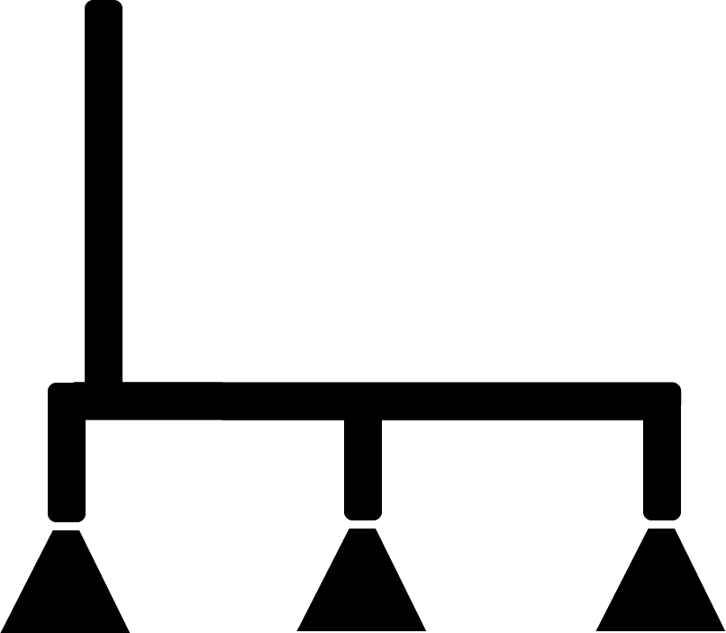

-

How can we help teach diabetic kids how to monitor their insulin? -
How can we incentivize healthy eating habits for children? -
How can we prevent at-home falls among older adults? -
Click to find out.
How can we help teach diabetic kids how to monitor their insulin?
How can we incentivize healthy eating habits for children?
How can we prevent at-home falls among older adults?
Click to find out.
In 2009, Design for America (DFA), an organization that encourages students to “create local and social impact” via design projects, could only be found at Northwestern University where it was created. Today, DFA is on 14 college campuses. The number would be higher, but out of the 60 or so schools that show interest in setting up a studio each year, DFA can only except between four and six, giving it a 10 percent acceptance rate.
Social Design:
employing a technique of process-driven innovation, to find creative, practical solutions to human problems.
The growth of DFA is indicative of the broader growth in participation of “social design,” which is the category under which all DFA projects fall. Social design has many broad meanings, but is loosely defined within DFA a technique of process-driven innovation, to find creative, practical solutions to human problems.
Dr. Liz Gerber, Junior Breed Chair of Design at Northwestern University and Faculty Founder of Design for America, said that while social design is not a new concept, it has recently gotten more public attention.
“The opportunities for engaging in this work have exploded,” she said. “But engineers have always been interested in social innovation.”
Gerber said that many universities are offering more opportunities to “solve social problems,” through both coursework and extra-curriculars. The drive behind this is unclear, but Gerber thinks it can be partially attributed to growing amount of information provided openly by the Internet.
“What has changed is technology,” she said. “It has totally changed the rate and accessibility of the exchange of information and resources.”
The advent of social media tools like Facebook and Twitter, Gerber said, has made more students aware of problems in different parts of the world, and this awareness is often the spark of social innovation projects.
“[Students] know the problems that they’re passionate about solving and they know why they want to take the classes that they’re taking so they can solve the problems they want to solve,” Gerber said. “It’s more of a factor of awareness.”
This awareness brought about by social media is multi-faceted. By interacting online, students have more opportunities to see social design role models.
“Because of Facebook and other social media platforms, students have the opportunity to see many more people doing things,” Gerber said. “They see their potential as so much greater.”
In line with Gerber's observations, the 2012 Global Entrepreneurship Monitor report found that the U.S. population is generally more entrepreneurial than other similarly situated populations. Specifically, only 32 percent of the U.S. population has a fear of entrepreneurial failure compared to a developed-country average of 39 percent, and conversely 43 percent of the U.S. has perceived entrepreneurial opportunities compared to an average of 31 percent.
While most of the students involved in DFA are engineering majors, participants come from diverse academic backgrounds. Often, as Gerber suggested, they are inspired by problems they see in the real world or their own lives.
In the end, Gerber explained that one of the things that makes social design significant is the way projects are evaluated.
“Society grades you,” she said. “Did you do something for them, or not?”

Social design projects are being worked on everyday by people across the country and around the world. Many of these smaller projects try and gain attention on places like Kickstarter.com. Kickstarter is a crowd-funding website, meaning that projects posted on its platform are seeking many small financial donations from interested members of the general public. Type in an issue that is important to you in the search box below (i.e. diabetes, green energy, etc.) and find out what social design projects are currently being worked on in that space:
Design for America: www.designforamerica.com
GOOD: www.good.is/social-design
IDEO: www.openideo.com/